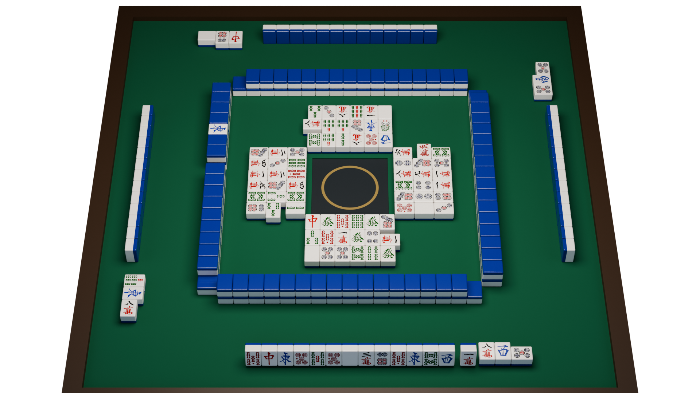

Task 2 of 2_5d_implementation_plan.md. Calibration only: one Blender
scene, one medium-telephoto perspective camera with a negative vertical lens shift,
a large soft overhead area key plus three low fills, film transparent. The
published PNG is RGBA. Numbers below are recomputed by
scripts/check-table-rig.mjs from the camera and placements, and
measured on the rendered pixels.

| camera eye | [0.000, -48.852, 58.569] |
|---|---|
| vanishing point of the side-wall runs | (960.0, -4265.4) px — above the frame |
| run convergence error | 0.10 px |
| side-wall inner face width (left / right) | 3.7969 / 3.7969 px (min over the run) |
| hand side sliver, outer / centre | 3.811 / 0.3411 px |
| hand plate vertical lean, outward min / max | -0.15 / 2.27 px |
| frame margins: rim left / right / top / bottom | 164.59 / 164.59 / 16.33 / -41.81 |
| player hand bottom margin | 73.5256 px |
| lit face luma (pond 5z) | 217.2 (shipped shell 223,220,216) |
| blue back luma | 63.7 (blue − red 152) |
| blank hand face luma | 137.9 |
| side-wall inner face luma (left / right) | 121 / 118.6 |
| felt luma | 61 |
| transparent / opaque pixels | 26.76% / 72.91% |
rig.json holds the full record: camera, light rig, every tile
placement, every acceptance number and every measured probe.